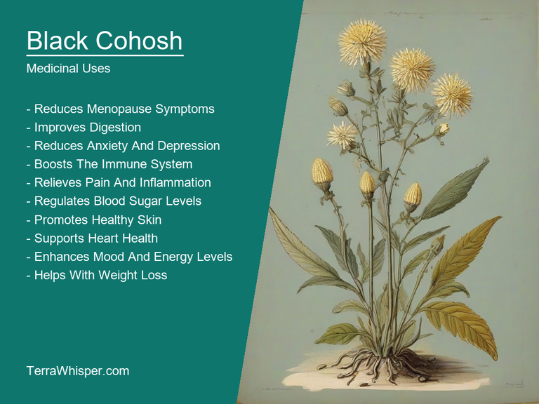
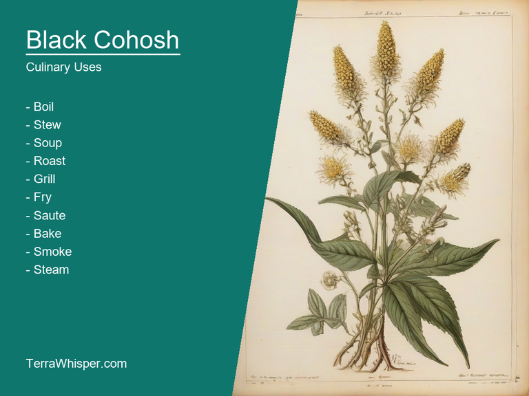
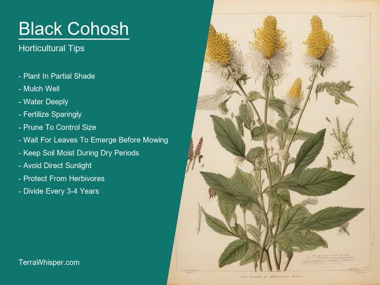
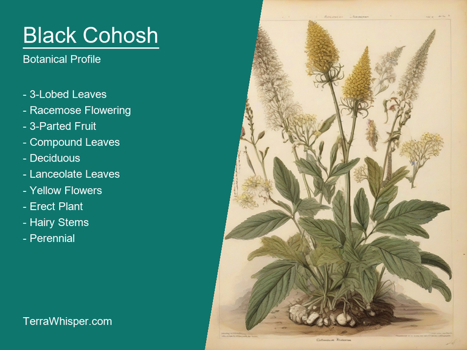
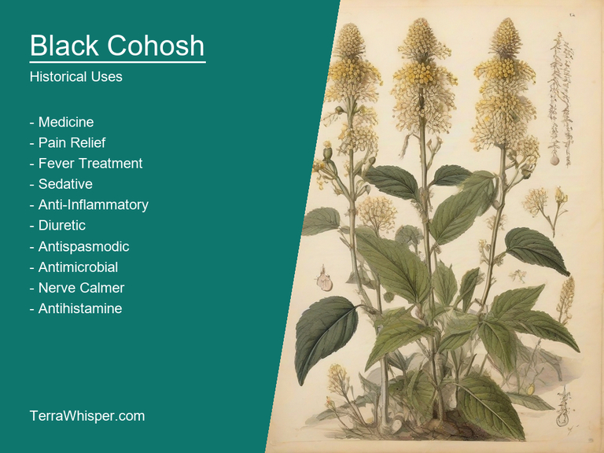

What To Know Before Using Black Cohosh (Cimicifuga Racemosa)

Black Cohosh, scientifically known as Cimicifuga racemosa, is a herbal plant that has been traditionally utilized in both medicine and culinary practices. Its roots are rich in chemicals which possess potential medicinal properties, such as anti-inflammatory and antispasmodic actions, making it useful for treating various health conditions. Meanwhile, the leaves and flowers can be used to prepare teas and salads, adding a unique flavor to diverse meals and dishes.
In terms of horticultural applications, Black Cohosh is an attractive ornamental plant that thrives in partial shade or full sun. It has tall stems with large, showy flowers in shades of white, pink, or purple. The plant's structure also lends itself well to being utilized in natural gardens and landscapes for aesthetic purposes.
This unique species was historically native to the eastern parts of North America, specifically in regions like Canada, the United States, and Mexico. Its medicinal uses date back to Native American culture before being adopted by early settlers, who then spread its popularity across Europe and Asia. Over time, Black Cohosh has become an important botanical specimen for both traditional and modern medicine, horticulture, and culinary pursuits.
In this article, you will discover what are the medicinal and culinary uses of black cohosh. Then, you'll learn how to cultivate it, what is its botanical profile, and how it was used historically.
What Are The Medicinal Uses Of Black Cohosh?
Black cohosh (Cimicifuga racemosa) has many health benefits, such as easing menopausal symptoms, relieving PMS discomfort, and alleviating menstrual pain in some women. This natural plant possesses chemical compounds that help with various issues, but the exact mechanisms are still not thoroughly understood.
The following illustration lists the most important uses of black cohosh in medicine.

Among these constituents, the main ones include triterpene glycosides like actein, cimifugin, and acetin, along with phytosterols, isoflavones, volatile oils, tannins, and flavonoids. The active ingredients found in Black Cohosh are responsible for its anti-inflammatory, antispasmodic, analgesic, and antidepressant properties.
The most commonly used parts of the plant include the roots and rhizomes. These components are often processed into various medicinal preparations such as extracts, tinctures, capsules, tablets, or powders. Extracts typically contain a higher concentration of beneficial compounds than the crude root, while tinctures offer a less potent yet convenient alternative for daily use.
Although Black Cohosh has numerous benefits, it is not without potential side effects. Some individuals may experience mild gastrointestinal distress like nausea and bloating after ingesting this plant extract. Additionally, there have been rare reports of liver problems associated with long-term usage or high doses. It's important to monitor for any adverse reactions, especially if you have a history of liver issues or are using concomitant medications that may interact with Black Cohosh.
To ensure the safest and most effective use of Black cohosh (Cimicifuga racemosa), it's essential to follow some precautions. Firstly, consult a qualified healthcare professional before starting any new herbal treatment, particularly if you have a pre-existing medical condition or are currently on prescribed medications. Secondly, adhere to the recommended dosage and duration specified for each specific preparation by either a doctor or the manufacturer's instructions to avoid overdose and minimize potential side effects. Lastly, monitor your progress throughout the course of treatment and report any significant changes in symptoms or discomfort to your healthcare provider.
What Are The Culinary Uses Of Black Cohosh?
Black Cohosh, known by its scientific name, Cimicifuga racemosa, has been used for centuries in culinary applications and for various therapeutic purposes. As a plant with edible components, it is incorporated into meals due to its unique flavor profile. It can be cooked into a variety of dishes to offer not only nourishment but also a distinctive taste experience.
The following illustration lists the most common uses of black cohosh for culinary purposes.

Black Cohosh's flavor profile offers earthy, sweet, and slightly bitter notes with undertones of licorice or anise. This distinctive blend of flavors makes it suitable for incorporation into different types of recipes like stews, soups, teas, sauces, and even desserts. The herb's taste can complement a range of other spices, providing the opportunity to experiment with new culinary possibilities in each dish.
When it comes to edible parts of Black Cohosh, both the roots and flowers are utilized for cooking purposes. While its roots have been traditionally used more extensively for medicinal purposes and contain several therapeutic compounds, the flower heads possess an exquisite fragrance which is quite popular in herbal teas and some dessert items.
To make the most of culinary techniques, one should keep a few tips in mind when using Black Cohosh in cooking. Firstly, for its roots, consider drying or slicing thin to reduce their strong flavor before incorporating them into dishes. Secondly, when preparing the flower heads, it is best to use fresh ones and remove any insects trapped inside if necessary. Lastly, balance is crucial while using Black Cohosh in recipes due to its distinct flavor profile.
While Black Cohosh has been used for centuries without significant reports of negative health effects, some people may experience side effects or toxicity when consuming it improperly. Overconsumption, allergic reactions, and potential interactions with medications should be taken into account. Therefore, to maintain safety while enjoying the culinary aspects of Black Cohosh in your cooking, it is advisable to consult a knowledgeable healthcare professional before incorporating it into your diet.
How To Cultivate Black Cohosh In Your Garden?
To grow Black Cohosh (Cimicifuga racemosa), start with a well-drained soil rich in organic matter, preferably amending with compost or aged manure. Plant seeds directly in the ground during springtime, spacing them at least 30 cm apart. Ensure adequate sunlight exposure by placing plants in areas that receive partial shade to full sun.
The following illustration lists the most important tips to cutlitvate black cohosh.

The ideal growing conditions for Black Cohosh are moderate temperature with an annual range of 15°C - 24°C, and a minimum winter temperature above -10°C. This plant prefers slightly acidic to neutral soil (pH between 6.0 and 7.5) and tolerates periodic droughts once established. It also benefits from regular watering during dry periods.
Regular maintenance for Black Cohosh includes removing weeds, keeping the area around the plant clear, and fertilizing annually with organic mulch or a balanced fertilizer to encourage healthy growth. Monitor plants for potential insect pests like aphids and spider mites. These can be controlled by introducing natural predators or using organic pesticides if necessary. Prune off spent flowers to promote new blooms, and divide clumps every few years in the early spring to enhance the overall health and vigor of the plant.
What Is The Botanical Profile Of Black Cohosh?
Black Cohosh, with botanical name Cimicifuga racemosa, belongs to the domain Eukaryota, kingdom Plantae, phylum Megalosporophyta, class Magnoliopsida, order Apiales, family Ranunculaceae and genus Cimicifuga. The species are commonly known as Actaea, Snakeroot, Black Snakeroot, or Rattleroot.
The following illustration display the botanical profile of black cohosh.

Variants include Cimicifuga racemosa var. asiatica (Asian Black Cohosh) and Cimicifuga racemosa var. canadensis (Canadian Black Cohosh). They share a similar appearance but show geographic differences in their distribution. Asian Black Cohosh is native to East Asia, while Canadian Black Cohosh is found throughout North America.
Morphologically, the plant has an upright and stout perennial growth habit with hollow stems. Its foliage consists of alternate, compound leaves that feature toothed edges. The flowers are small, pale or whitish-green in color with large green bracts and are found atop tall flowering stalks. These stalks support numerous racemes of flowers.
Black Cohosh's natural habitats are mostly confined to forested areas where they receive adequate sunlight for photosynthesis. It is primarily native to temperate regions, specifically in the eastern parts of North America and East Asia. They prefer slightly acidic soil with good drainage and thrive well under canopy cover, growing as an understory shrub or herb.
The life cycle of Cimicifuga racemosa comprises growth stages that involve seed dispersal, germination, and flowering. It starts from seed sowing after pollination which occurs when insects visit the plant for nectar. The seeds are then released after fertilization through wind or animal dispersal, initiating a new life cycle as they germinate in suitable soil conditions. Throughout their lifetime, Black Cohosh plants develop their flowering stalks and produce numerous racemes of flowers, thereby sustaining the species' reproduction process.
What Are The Historical Uses Of Black Cohosh?
The origin of "Black Cohosh" can be traced back to its Latin name which is 'Cimicifuga racemosa'. It derives from a combination of two Greek words - ‘cimex' meaning bedbug, and the suffix '-fugus' referring toward drive out or repel. The plant belongs as per botanical categorization under family Ranunculaceae comprising nearly 30 species in total, distributed over different regions worldwide such Asia to North America including Europe too where it is native primarily but also flourish widely outside of their habitual zones due largely for adaptable climate factors or even cultivation practices.
The following illustration lists the most well known historical uses of black cohosh.

The cultural significance associated with Black Cohosh varies significantly among distinct indigenous societies that have used this medicinal plant over centuries past into today's present-day modern era as well - it was deemed not just valuable herbal remedy but often viewed symbolically too, reflecting spiritual aspects. For instance, certain tribes held belief systems where they believed Black Cohosh served both practical and ceremonial purposes such as protection against negative energies or enhancing strength & endurance during ritual activities related to their faith practices while others considered it crucial medicinally addressing conditions pertinent around women's reproductive health like menstrual cramps, premenopause signs& symptoms etc.
Legend and Myth intertwined deeply within different narratives of Black Cohosh usage across generations over centuries which added more mystical connotations surrounding this plant species - one such story is a belief about curing ‘love sickness', suggesting an infusion made from its roots was thought capable to re-spark the fading affection between lovers; while another tale speaks volumes on how even superstitions play role in folklores too. The common theme that unites these mythical interpretations usually involved using Black Cohosh as symbol or metaphor for various aspects of human life, reflecting upon emotions like love and relationships to health issues relating bodily functions - hence showcasing the complex interplay between culture & herbs intricately weaved through stories passed down from generations before us.
Fabled representations have also found their way into literary works such as 'The House of Seven Gables', written by Nathaniel Hawthorne in 1851; wherein references made about characters taking tea that had a distinct hint to these specific types botanical flavours reflecting its use during those times. This kind depiction proves interesting for scholars who delve deep into understanding how societal customs, values and beliefs were embodied by everyday objects like herbs/food etc.; demonstrating ways ancient ideas got captured across cultural landscape over centuries via varied creative mediums including prose which then transcend their mere local existence transforming them part universal consciousness now appreciated today as historical anecdotes of interest
The uses associated with Black Cohosh remained grounded in its traditional medicinal values that were handed down generational through word-of mouth practices & personal experiences - ranging from being a remedy for several gynaecological issues like menstrual cramps, fertility challenges or even providing support during Menopausasal phases among others. This plant has been used traditionally in many different forms – brewed into teas/tinctures as common form of consumption but sometimes dried & ground down to be mixed with other herbs creating unique concoctions for specific ailments according tribal knowledge passed onto practitioners over time showcasing its versatility adaptability when applied within various contexts